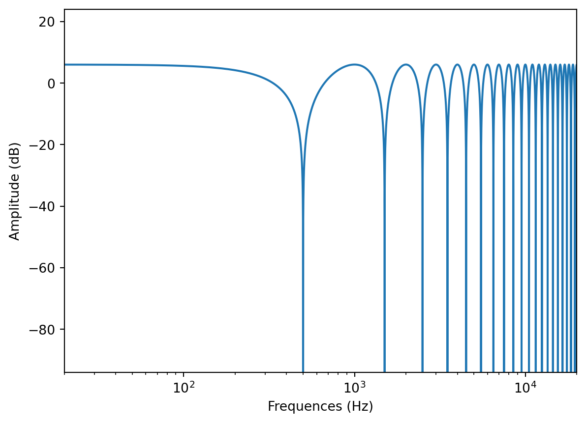
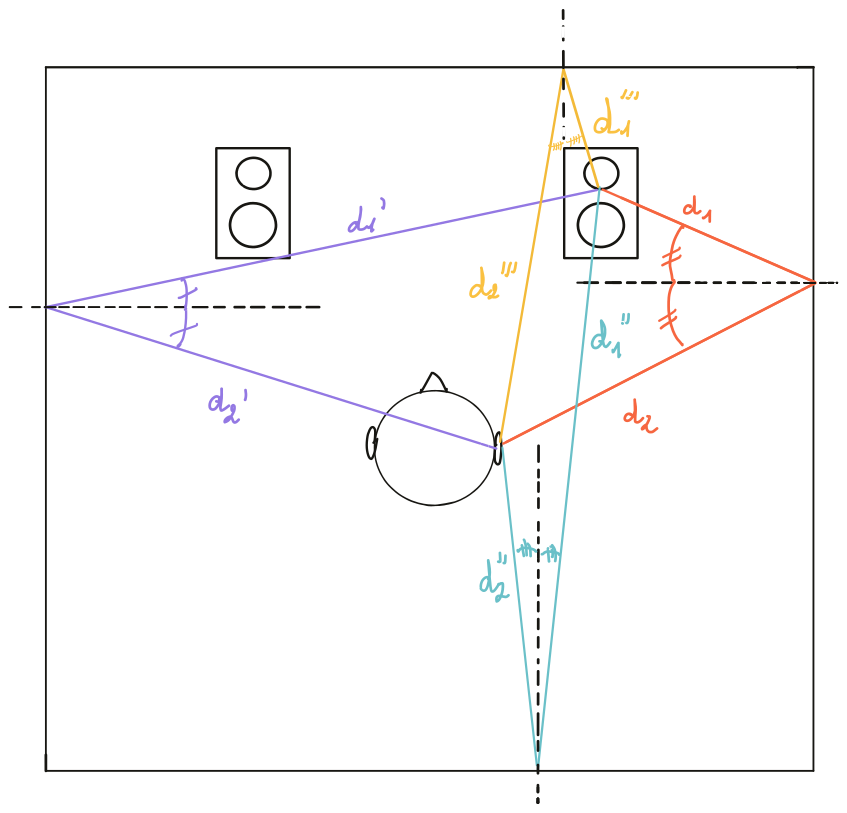
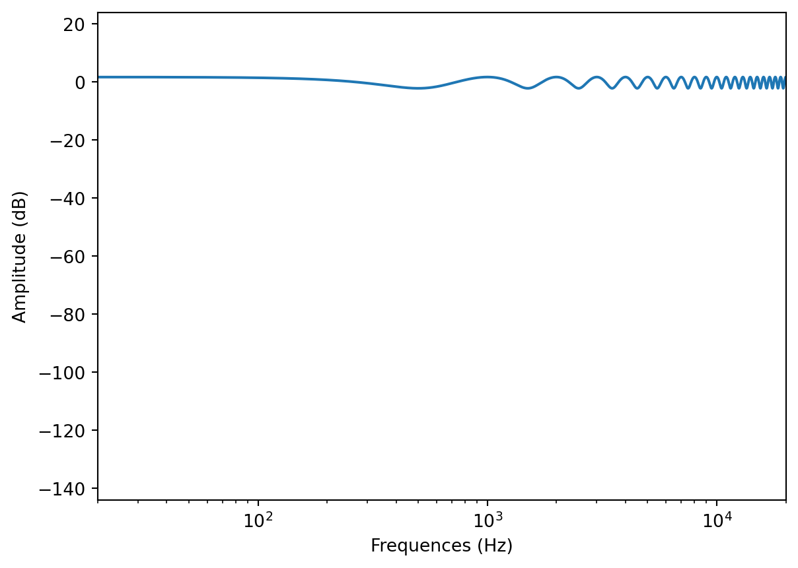

3 Acoustique des salles
Tout environnement, sollicité par un évènement sonore, produit une réponse acoustique. Cette réponse acoustique est appelée réverbération. Elle est caractéristique d’un lieu et peut, dans certains cas, être une alliée précieuse dans notre travail. Dans d’autres, elle est source de problèmes et complexifie grandement notre travail d’écoute analytique.
3.1 Généralités
3.1.1 La réverbération
Afin d’étudier l’acoustique d’une salle, on procède à la mesure de sa réponse impulsionnelle. Pour se faire, on émet dans le lieu à mesurer un signal audio impulsionnel (clappement de main, explosion d’un ballon, émission d’une impulsion de Dirac grâce à un haut-parleur), et l’on enregistre le résultat à l’aide d’un microphone de mesure.
La réponse impulsionnelle d’une salle est généralement décrite en deux temps : le temps des premières réflexions et le temps du champ diffus.

Les premières réflexions sont les premiers rebonds d’une onde sonore sur les parois d’une salle et sont caractéristiques de la signature acoustique du lieu. Ces rebonds reviennent à l’auditeur avec un certain temps. Ce retard se nomme souvent « pré-délai » dans les moteurs de réverbération artificiels. Ce prédélai est fonction de deux paramètres :
- la taille de la pièce ; plus la pièce est petite, plus les premières réflexions reviendront à l’auditeur rapidement.
- les positions de la source sonore et de l’auditeur ; plus l’auditeur est proche de la source, plus les premières réflexions arriveront après le son direct, plus l’auditeur est loin de la source, plus les premières réflexions arriveront en même temps que le son direct.
Lorsque les premières réflexions elles-mêmes auront rebondi plusieurs fois sur les parois du lieu, le phénomène d’écho des premières réflexions va se muer en champs diffus, par nature plus dense. La longueur du champ diffus se mesure grâce au RT60. Cette méthode de mesure propose de regarder le temps que met la réverbération à perdre 60 dB. Ce temps permettra ensuite de donner une longueur de réverbération.
3.1.2 Calcul du temps de réverbération
L’équation de Sabine permet de calculer le temps de réverbération d’une salle à partir de son volume et du coefficient d’absorption de ses matériaux.
\[RT_{60} = 0.1611 \times \frac{V}{\sum_{i=0}^{k} S_i.\alpha_i}\]
\(V\) s’exprime en \(m^3\) et \(S\) en \(m^2\). \(\alpha\) est le coefficient d’absorption du matériau, en sabins. Ce coefficient est compris entre 0 et 1, plus il est important plus le matériau est absorbant.
En guise d’exemple sur l’utilisation de la formule ci-dessus, prenons le cas d’une pièce de \(25\,m^2\) (\(5\,m\) par \(5\,m\)) et de \(2.40\,m\) de hauteur. Nous considérons que le sol est en parquet et les murs en plâtre. Nous avons donc \(25\,m^2\) de parquet et \(4\times(5\times2.4)=48\,m^2\). On trouve sur les sites de fabricant de matériaux que le plâtre peint a un coefficient d’absorption de 0.05 sabins et le bois un coefficient de 0.15 sabins. Notre calcul final.
\[RT_{60} = 0.1611 \times \frac{25 \times 2.4}{25\times0.15+48\times0.05} \approx 1.57\,s\]
On peut dès lors calculer la distance critique, distance à partir de laquelle on entendra autant un évènement sonore que la réponse acoustique de la salle à son stimulus.
\[d_c \approx 0.057 \times \sqrt{\frac{V}{RT60}}\]
Dans notre exemple \(d_c \approx 0.35\,m\).
Il est souvent considéré que la taille de la pièce joue un rôle déterminant sur la longueur de réverbération. L’équation de Sabine indique bien que le coefficient d’absorption des matériaux y joue un rôle beaucoup plus important. Le modèle de réverbération de l’IRCAM va jusqu’à complètement décorréler la taille de la pièce simulée du temps de réverbération. Au final, la taille de l’espace joue davantage sur la structure temporelle des échos, et donc, principalement sur les premières réflexions.
3.1.3 Limite de l’équation de Sabine
Il convient d’observer plusieurs réserves quant à l’utilisation de l’équation de Sabine. Premièrement, elle ne tient pas compte de l’aspect fréquentiel lié à l’absorption des matériaux. En effet, le temps de réverbération des graves est presque toujours plus long que celui des aigus. Afin de contourner ce problème, on pourra chercher des coefficients d’absorption tenant compte de la fréquence et ainsi résoudre l’équation de Sabine pour certaines plages fréquentielles.
L’équation de Sabine pose également problème pour de petits espaces (régie d’écoute par exemple) en prédisant un temps de réverbération trop long. Dans ce cas, l’équation d’Eyring est plus adaptée.
\[RT_{60} = -0.1611 \times \frac{V}{\sum_{i=0}^{k} S_i.\ln(1-\alpha_i)}\]
:warning: L’équation d’Eyring n’améliore pas non plus la problématique fréquentielle.
3.1.4 L’indice de “Speech Clarity” C50
L’indice d’intelligibilité (noté \(C_{50}\)), ou “Speech Clarity” en anglais, indique la faculté d’une pièce à permettre une bonne compréhension d’une voix parlée. Son principe repose sur la mesure de l’énergie de la réponse impulsionnelle de la pièce avant 50 ms et après 50 ms. On en fait ensuite un rapport logarithmique pour obtenir une valeur en décibel.
\[ C_{50} = 10 \times \log \frac{Energie(<50ms)}{Energie(>50ms)} \, dB \]
Plus la valeur du \(C_{50}\) est grande, plus la salle concentre la majorité de son énergie avant les 50 ms de propagation de la réverbération. À l’inverse, plus le \(C_{50}\) est faible, plus la salle a une énergie prédominante après 50 ms de temps de propagation. Dans ce cas une voix parlée paraîtra moins intelligible, car la réponse acoustique de la pièce engendrera un effet de fusion et de masquage.
3.1.5 Le phénomène d’onde stationnaire
La plupart des pièces de vie sont des salles rectangulaires. Dans ce cas, les surfaces sont toutes parallèles. Ce type de salle est particulièrement propice à l’apparition d’ondes stationnaires. Une onde stationnaire est un phénomène acoustique provoquant l’augmentation de volume de certaines fréquences (ventre) et la disparition d’autres (nœuds).
Nous aborderons ici ce phénomène sous l’angle de l’acoustique des salles, mais il est applicable dans d’autres situations, comme la vibration d’une corde par exemple.

Il est possible de calculer les fréquences d’un mode grâce aux formules vues au chapitre précédent :
\[f(n) = \frac{c}{2L}.n\] où \(c=340\,m.s^{-1}\), \(L\) est la longueur considérée de la pièce. Pour \(n=1\) on trouve le mode propre. Pour \(n>1\) on trouvera tous les modes harmoniques.
Étudions la fréquence du mode propre pour deux cas théoriques : une salle de 16 m² (4x4) et une autre de 49 m² (7x7). On trouvera donc :
\[f(1)_{L=4m} = 42.5 \,Hz \>\>\>\> f(1)_{L=7m} = 24 \,Hz\]
On en déduit donc que, plus la pièce est grande, plus la fréquence des modes propres sera grave. Il convient également de considérer la distance de chaque surface parallèle, car les pièces sont rarement cubiques. Cela implique donc la présence de trois modes propres, plus leurs modes harmoniques, pour une seule et même salle.
3.2 Premières réflexions et filtre en peigne
Nous avons vu que la réponse acoustique, ou réverbération, d’une salle se décompose généralement en deux parties, la première étant les premières réflexions. Ces premières réflexions sont donc, comme leur nom l’indique, les premiers rebonds que nous entendons suite à un évènement sonore.
Dans de petites pièces, les premières réflexions peuvent être entendues si proche du son direct que cela génère un type de filtrage bien particulier appelé filtre en peigne.
Toujours en utilisant les formules définies au premier chapitre, on établit la relation suivante :
\[ fc = \frac 1{2t} = \frac c{2d} \]
Où \(fc\) correspond à la fréquence d’annulation la plus grave du filtre en peigne. Les autres fréquences se calculent grâce à la relation \(f(n) = fc*n\). Le phénomène de filtre en peigne est donc également harmonique.
Ainsi, on peut calculer les filtres en peignes présents au point d’écoute d’une régie de mixage ou de prise de son grâce à la mesure du chemin des premières réflexions.

La réflexion du son sur une paroi est tout à fait comparable à de l’optique géométrique. Une onde sonore arrivant avec un angle d’incidence \(\alpha\) sur une surface sera réfléchie avec le même angle. Ainsi, il est souvent conseillé d’utiliser un miroir lorsque l’on positionne des traitements acoustiques. Lorsque la personne assise au point d’écoute voit une enceinte dans un miroir placé sur un mur, on sait alors qu’il faudra placer le panneau à la place du miroir.
On se rend donc compte que l’influence des filtres en peigne générés par les premières réflexions est très importante. Ce phénomène à lui seul explique l’intérêt d’une grande régie d’écoute. En effet, plus une pièce est grande, plus l’écart de temps entre le son direct et les premières réflexions est important. Cela implique deux choses :
- Notre cerveau favorisera le son direct plus facilement (effet de précédence)
- À partir d’une certaine taille, l’effet du filtre en peigne se mue en information d’acoustique pour notre cerveau. Au-delà de 40 ms (trajet d’une première réflexion d’environ 14 m), l’écart entre le son direct et les premières réflexions est tel que nous entendons un écho (effet Haas).
Afin de réduire au maximum les effets des filtres en peignes, il est recommandé de placer des traitements aux points de réflexion critique par rapport à la position d’écoute (voir schéma ci-dessus).

3.3 Traitement acoustique
Grâce aux différents points abordés ci-dessus, nous avons maintenant bien l’idée que l’acoustique d’un lieu est un des facteurs les plus déterminants sur le rendu sonore. Mais c’est aussi celui sur lequel il est plus difficile et technique d’intervenir.
On favorisera au maximum une architecture optimisée pour l’acoustique. Dans ce but, il convient de n’avoir aucune surface parallèle, cela permettant de grandement limiter l’apparition d’ondes stationnaires. On choisira également des matériaux avec des propriétés acoustiques intéressantes (plâtre et carrelage sont à proscrire, au profit du bois par exemple).
On se posera ensuite la question des endroits de la pièce les plus propices pour y positionner un évènement sonore (enceinte, musicien, etc.). On cherchera donc un point où la contribution des différents modes semble équilibrée. Pour cela, il suffit de se munir d’une enceinte et d’y diffuser une musique ou un signal test qui nous est familier. En déplaçant l’enceinte, on pourra évaluer la contribution acoustique de la pièce en différents points.
Une fois ces considérations prises en compte, on pourra alors aborder le traitement de l’acoustique.
Il ne faut pas confondre isolation acoustique et traitement acoustique. Dans le premier cas, on chercher a limiter la contribution sonore d’un lieu sur son environnement, dans l’autre on cherche à améliorer la propagation du son dans un espace donné. Une isolation acoustique satisfaisante nécessite de lourds travaux, voire l’aménagement d’une “boîte dans une boîte”. Ces notions d’acoustiques dépassent le cadre de ce cours.
3.3.1 Les types de traitements
On trouve, en général, deux types de traitements :
- Les absorbeurs, qui réduisent l’énergie d’une onde sonore à son impact.
- Les diffuseurs, qui répartissent l’énergie d’une onde sonore dans l’espace.
Dans un lieu où la quantité de réverbération est jugée trop importante, on utilisera des absorbeurs. À l’inverse, dans un lieu où l’on souhaite préserver la quantité de réverbération, mais en évitant les phénomènes de modes ou de filtre en peignes, on utilisera des diffuseurs.
Dans de petits lieux, l’usage de diffuseur semble contre-productif, la priorité étant d’absorber au maximum les premières réflexions, celle-ci arrivant très rapidement après l’émission du son direct.
3.3.2 Considération d’acoustique pour le travail de son
Il est vivement recommandé d’installer un studio, de prise de son ou de monitoring, dans un lieu plutôt grand. En effet, plus le lieu est grand, plus il sera facile de positionner un point de prise de son ou d’écoute suffisamment éloigné des parois afin de minimiser l’influence des premières réflexions. Aussi, plus le lieu est grand, plus l’espace y sera suffisant pour installer des traitements acoustiques. Certains types de traitements, comme les basstraps, peuvent prendre une place bien trop importante pour être installée dans des pièces de dimension habituelle (chambres, bureau, etc.). On se rappellera aussi de choisir une pièce de travail avec le minimum de surface parallèle, afin de limiter les ondes stationnaires.
En ce qui concerne les traitements en eux-mêmes, il est vivement recommandé de traiter en priorité le bas du spectre. L’ajout de basstrap est donc prioritaire sur le reste des traitements. Plus la longueur d’onde à traiter est grande (donc la fréquence grave), plus la taille des matériaux devra être importante. On retrouve donc le point abordé précédemment : traiter une pièce correctement, demande un certain espace. Par ailleurs, il est important que les traitements appliqués à un lieu soient linéaires en fréquence, c’est-à-dire qu’il ne se concentre pas sur une seule zone du spectre. Cela arrive souvent avec les kits de mousses peu onéreux, mais n’ayant une réelle efficacité que dans les médiums et hautes fréquences.
Pour une régie d’écoute, on sera tenté de privilégier des traitements d’absorption. En effet, une réverbération trop longue dans une régie de monitoring risque fort de fausser certaines prises de décisions (distance des microphones à la source, quantité de réverbération, etc.). À l’inverse, une pièce avec un temps de réverbération trop court pourra créer un sentiment d’inconfort, voire de malaise.
Pour une salle de prise de son, l’idéal est de disposer d’un grand espace avec un traitement acoustique principalement basé sur de la diffusion, pour ensuite disposer de traitements absorbants amovibles permettant de sculpter le rendu acoustique en fonction de la prise de son à réaliser. Pour des petits lieux (- de 25 m²), on cherchera à absorber au maximum afin de limiter les effets de filtre en peigne.